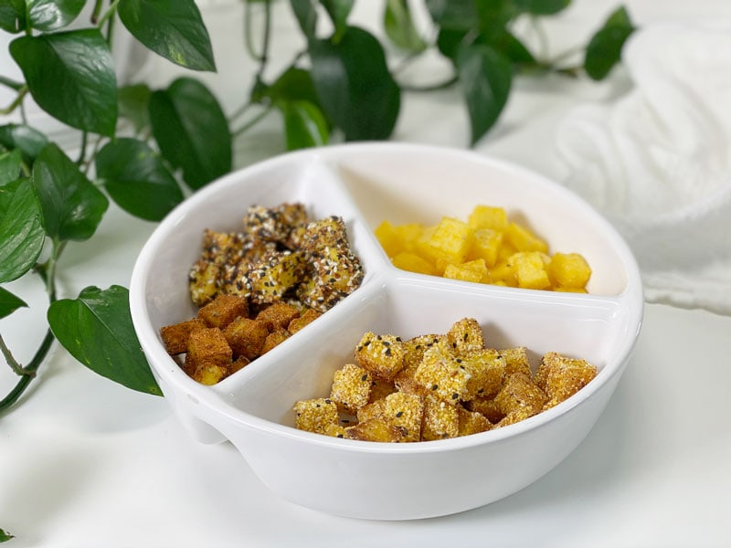

Polenta Croutons | Oil-free | 5 Flavors
I eat a lot of salads and when I do, they are substantial. My inner rabbit isn’t going hungry…not on my watch. One of the best things you can do to keep enjoying your salads from getting boring is to add variety to them. In truth, lettuce is just the vehicle for a multitude of flavors, right? So, this morning I woke up with the idea of making polenta croutons–not just one, but 5 different flavors: smoky with a hint of cayenne, everything bagel, dill, plain with sea salt, and taco. Oh boy, oh boy–these little cubes are addictive.

We must talk texture, because these do not bake to the same dry texture that bread croutons do. These guys have a crunchy exterior and a softer inside. When I made these croutons, I premade a batch of Italian corn porridge (polenta). My recipe yields 4 cups, which would be a LOT of croutons. But in honor of batch cooking, I divided up the polenta and created several dishes from it, including porridge for breakfast meals and these croutons. If time is a factor, and you need to make these right away, you can buy precooked polenta in a tube. There are always options.
Taking the Ordinary and Making it Extraordinary
Tips and Tricks
- You want to make these polenta croutons just before serving. Any leftovers should be stored in the fridge, where they will soften. They still taste amazing but the texture changes. However, you can reheat in the oven for 10-15 minutes until they’re crispy on the outside again.
- The time needed to bake the croutons will vary based on your oven and how large or small you cut your cubes of polenta. Start checking the oven at 30 minutes to ensure your croutons do not burn. Mine took almost an hour. They don’t brown too much, since we aren’t using any oil.
- You can use precooked polenta in a tube (sold in most grocery stores) or you can make your own (which is always my choice). Cooking your own involves a few more steps but is well worth it in the nutrition department.
How to Enjoy Polenta Croutons
- Eat them like popcorn right out of the bowl.
- Toss a handful on your next green salad.
- Sprinkle some into your next bowl of soup for added texture and layer of flavor.
I hope you enjoy this fun recipe. Be sure to get the family involved–quality time is priceless! Have a blessed day, amie sue
 Ingredients
Ingredients
Yields 126 croutons (11″x7″ pan)
Seasoning Ideas
#1 – Smoky Flavor
- 1/2 cup dry Italian corn (polenta)
- 1 Tbsp white sesame seeds
- 1/2 Tbsp black sesame seeds
- 1 tsp dried minced onion
- 1 tsp smoked paprika
- 1/2 tsp onion powder
- 1/2 tsp sea salt
- 1/4 tsp black pepper
#2 – Everything Bagel Seasoning
#3 – Dried Dill
#4 – Plain Sea salt
#5 – Taco Seasoning
Preparation
Homemade polenta porridge
- Choose your cooking method – stovetop or Instant Pot method. Remember you can use pre-cooked store-bought if need be.
- Once it is made, pour the porridge into a baking sheet (make sure it has a lip). I used an 11″ x 7″ baking pan to create my croutons and ate the leftover porridge for my breakfasts. No need to line or grease the pan; it pops right out once set.
- Pour it no more than 1/2″ thick.
- You can use any size pan, based on how many croutons you want.
- Don’t overthink it; keep the process simple.
- Cover the surface of the polenta with either plastic wrap or parchment paper.
- This prevents a “skin” from forming on the top layer.
- Slide into fridge overnight or until it sets up nice and firm.
- Once it is set, flip the polenta onto a cutting board and remove the pan.
- Cut into desired cube sizes. Do your best to cut the crouton shapes the same size so they all cook evenly at the same time.
Season and Bake
- Preheat the oven to 400 degrees (F) and line a baking sheet with parchment paper.
- Place whatever seasoning combination you want into a bowl. Coat each side of each cube, one by one (think active meditation or get the kids involved). Place each cube on the baking tray. Create space between each one so they cook evenly.
- As you are individually coating each cube, I found it helpful to rinse and dry off my fingertips a few times throughout the process. Due to the wetness of the polenta cubes, the seasoning starts to stick to your fingers and soon more will end up more on them than the cube.
- If you wish to just use sea salt, don’t coat all sides, just sprinkle on top.
- Bake for 45-60 minutes, until crispy on the outside. They won’t caramelize in color, since we aren’t using any oil.
- Make these polenta croutons just before serving.
- Any leftovers should be stored in the fridge, where they will soften. They still taste amazing, but the texture changes. You can reheat in the oven for 10-15 minutes until they’re crispy on the outside again.
© AmieSue.com